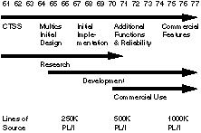

The Multics System Programming Process
ABSTRACT: Features of the Multics system programming process lead to high programmer productivity with high software reliability. Other workers' predictions of increasing difficulty of system maintenance with time have not been observed; reasons for this are investigated.
Introduction
Multics began as a research time-sharing system and evolved into a full-scale commercial operating system over a period exceeding 10 years.[1,2,3] Its initial design included a collection of advanced features which proved to be efficient for software development and for running production. Figure 1 is an overview of the development history.

Figure 1. Multics Development History
This paper describes the process of system programming for Multics and shows how unique properties of the process lead to unique properties of the operating system, such as ease of use, ease of maintenance, and high reliability.
Generation of Requirements
Requirements for system changes and improvements arise from two sources: marketing provides direction about future customer requirements, and current customers request new features and extensions and also find bugs. A special class of customer that plays a significant role in the definition of new requirements is the system programmer community. Since they use Multics every day, they are especially responsible for the discovery of performance problems and inconsistencies both in the user interface and internal to the system.
Design Process
Usually, a Multics system programmer begins a project by writing a brief technical memorandum describing the problem to be solved, and seeking consensus at the level of problem definition from the other members of the programming staff. Often, the attempt to identify the problem encounters differences of opinion, and these lead to refinement and iteration. Once the problem is satisfactorily defined, the designer writes a technical memorandum describing his proposed solution, and again seeks consensus. Often, this requires a series of committee meetings, chaired by the designer, and open to all members of the development staff.
When the design is understood, the programmer writes a formal Multics Change Request (MCR). An MCR summarizes the change to Multics, the reasons for the change, and its implications. If system documentation is affected by the change, drafts of the changes are supplied with the MCR. The MCRs are batched and submitted to each member of the MCR Board.
The MCR Board is a small group (10) of programmers, which includes the most experienced and knowledgeable people on the staff. The board meets weekly. Prior to each meeting, board members scrutinize MCRs for technical correctness and consistency with the overall design of the system. A majority vote is required to pass an MCR. Very few MCRs are rejected; proposals which fail to get a majority, or which any board member finds incomplete, insufficiently general, or with possible hidden consequences, are postponed for a week. The discussion of a controversial MCR often leads to its being rewritten or withdrawn for further study. Decisions made by the board are based only on technical grounds; considerations of schedule, manpower and budget belong to another arena.
The Board serves as a guardian of system conventions and as an education mechanism. Since no change can be installed without an approved MCR, programmers take care to conform to system conventions and to document their changes carefully, in order to have the MCR pass quickly. The reasons for rejection or postponement of an MCR serve to educate the programming staff, including the board members, in the sometimes subtle consequences of system conventions and standards. The board often attempts to generalize specific questions into new technical policies; if such a step is successful, the new policies are added to the system programming standards manual.
Although bug fixes do not require technical memoranda, even the simplest one-line change requires an MCR. This rule leads to some additional paperwork, but ensures that intended functions are not mistaken for bugs, and helps educate the whole team about the kinds of bugs that may exist elsewhere in the system. An important attribute of the design process is that it forces a high level of technical peer review of all system changes by those most qualified to judge implementation: the system programmers. Although this review proceeds at the rate of over 500 MCRs per year, the additional overhead involved is compensated for by designs of high quality and interfaces that maintain a high degree of internal consistency over the years.
Implementation
For most projects, the designer is also the programmer, debugger, and documenter. This practice eliminates a troublesome layer of communication and responsibility determination. This approach is feasible due to the ease of the actual programming and debugging task in the Multics environment. High programmer productivity has been established as a Multics tradition; this has come about partly by selecting talented and dedicated people, and partly by providing them with powerful tools, including PL/I.[4]
Because most of the system is written in PL/I, programmers are not concerned with the difficult problem of managing the sharing of machine registers at every point in the program. The PL/I storage management mechanism coupled with the Multics virtual memory relieves the programmer of much of the traditional responsibility for space management as well.
The library of program development, debugging, and maintenance tools which evolved as part of the system makes it easy for individual programmers or small teams to tackle large projects. Editing, compiling, and unit checkout are routinely done online, as is documentation. In fact, there is even a system programmer facility that formats and prints an MCR form given text input and a list of boxes to check. Other system programming tools simplify the coordination of multiple independent changes to the same module, assist in determining which statements in a program are most costly, and help keep track of the interconnections of system modules.
Changes requiring a new version of the central supervisor are tested on a dedicated hardware configuration connected to the system programming site by inter-computer network. An experienced system programmer can generate and test a new version of the supervisor in about ten minutes, by using file-transfer and system generation tools. The development machine is also used to perform integrated testing of large projects and to analyze the effect of changes on system performance. Performance analysis is routinely carried out at the system level, by means of standard benchmarks; at the module level, by means of the system's built-in instrumentation; at the program level, by means of subroutine call trace facilities; and at the statement level, by means of compiler generated statement usage counters.[5]
The use of a high-level system programming language, together with the other system programming tools, facilitates design iteration, since the cost of rewriting a module completely is lowered. The amount of code discarded during the building of Multics is many times the size of the current supervisor. Some critical modules of the system have been redesigned up to a dozen times, with gains in simplicity and performance each time. In many cases, performance analysis of a module led to a deeper understanding of its function, and enabled us to rewrite the module to simplify the most important case, improving performance without sacrificing generality.
Use of a high-level language also reduces the necessity for internal module-level documentation, since the program itself, especially if well commented, can be used as documentation. Standard Multics practice for programs that produce operator messages is to insert complete documentation for the message, including its meaning and the appropriate response, into the source of the module producing the message. This information appears as a comment to the compiler, but is extracted by standard library maintenance tools and transformed into a manual describing the messages produced by the system.
Program Auditing
When a Multics system programmer has completed a change, he submits his modules to a knowledgeable colleague for review. Thus, not only is the design reviewed by the design discussion process and the MCR Board, but the actual implementation is also subjected to expert scrutiny.
The auditor is responsible for pointing out problems with general structure, documentation, conformance to system standards, and correct operation. The MCR Board sometimes attaches special comments to an MCR to remind the programmer and auditor of important things to check. The auditor can, and often does, suggest changes in the structure of a program, the names of variables, and the comments, as well as in items that actually affect the execution of the program. Several rounds of auditing may be necessary before programmer and auditor agree that the program is ready to install.
Integration and Exposure
Audited changes are installed in a Multics system that serves as a primary exposure site. Since most of the bookkeeping is done online, new software is installed more or less continuously, usually within a day or two of auditing, at a rate of about 50 programs a week. Once a new module is installed, its source code becomes the official version used by any other programmers making changes to the same programs; Multics provides tools that allow the easy automatic merging of multiple independent software modifications.[6]
A standard performance benchmark is run whenever a new version of the central supervisor is installed. In a sense, this is a fourth level of review of a new implementation, this time based upon overall performance characteristics as opposed to human perusal. If any unanticipated performance problem has been introduced it is easy to de-install the new software and go back to performance analysis, while the code is still fresh in the programmer's mind. The maintenance tools that keep the system source and object libraries up to date have the ability to revert a change quickly, if problems develop in either function or performance. Corrections are made to the system by modifying the source and installing a new version; there are no patches.
Since the exposure site is used by many different projects, mostly for purposes other than Multics system programming, installing a module that has to be pulled is avoided whenever possible. Sometimes, it is easier to fix the bug and make a second submission, rather than pull and reinstall a submission that may consist of many programs. Problems of this sort are rare relative to the rate of system change.
Formal Release
Formal releases of Multics to field sites are made once or twice a year. To a large extent, this strategy is a result of the mechanism used for production of software manuals, which are not published incrementally, but consist of batches of changes to the previous version. A formal release also requires additional software quality assurance and regression testing, with an even wider variety of user programs than found at the exposure site. Sites receiving formal releases report high software reliability.
Table 1. Source line count by library. (include files expanded, comment only lines omitted.) (Release 6.0, Dec 1977)
PL/I non-PL/I
prgs lines prgs lines
bos 0 0 40 33,433
hardcore 512 158,488 145 70,645
language 331 144,733 45 18,809
network 109 36,636 21 4,811
obsolete 5 574 0 0
standard 388 126,140 36 4,136
tools 685 240,227 123 25,470
unbundled 917 425,007 83 68,723
TOTAL 2947 1,131,845 493 226,027
Observations
In 1971, Belady and Lehman[7] suggested that as large software systems evolved in time, their maintenance would become increasingly difficult, due to communication and coordination problems. This effect has not been observed with Multics: the rate of system change has remained constant or increased, while the staff has remained about the same size. Several reasons may account for our experience.
First, it may be simply that the size of the group is so small that these effects are swamped by noise. Although there are about 30 system programmers, their areas of specialization have little or no overlap, and so the actual group size requiring coordination is usually more like four or five. The value of the advanced features of Multics is shown by the fact that a relatively small programming group handles maintenance and bug fixing, quality assurance, and continued extension in response to customer needs for all aspects of the system, which now consists of over 3,500 modules (about 1 million lines of source code).
Second, the standard practices required of Multics system programmers may combine to postpone collapse. Belady and Lehman suggest that the use of structured programming methods and a high-level language will decrease the likelihood of collapse. Our use of PL/I provides a documentation benefit, and also shortens the time required for an individual change. The modular organization of the Multics supervisor limits the number of cases of inter-program communication via shared global objects, held to be one of the roots of system collapse.
Third, the ability and willingness of the Multics group to rewrite rather than patch tends to limit the number of problems with "bugs in the fix" which are thought to lead to additional maintenance effort. About 2/3 of the programs comprising Multics were modified during 1977: some of these changes were one-line fixes, while others were complete rewrites of existing functions or totally new modules.
Table 2. Percentage of Library Compiled by Year
70 71 72 73 74 75 76 77
bos 0.0 0.0 0.0 0.0 0.0 5.0 47.5 47.5
hard 0.0 0.0 0.0 0.0 0.0 0.0 28.1 71.9
lang 0.0 0.0 2.1 6.8 4.4 21.4 0.8 64.6
net 0.0 0.0 0.0 0.0 0.0 0.0 0.0 100.0
obs 0.0 0.0 0.0 0.0 0.0 0.0 0.0 100.0
stand 0.0 0.2 2.3 5.5 7.4 15.5 24.0 45.0
tool 0.1 0.8 2.3 7.0 7.9 20.3 17.0 44.6
unb 0.0 0.0 7.4 0.6 3.9 1.8 9.4 76.9
Finally, the strategy of integrating and exposing system changes on an incremental basis and making formal releases at a much slower rate seems to obtain the best features of both strategies. Rapid exposure release discovers unexpected consequences of each change quickly, so that corrective action can be taken before other efforts are interfered with, while slow formal release allows additional time for software stabilization and user documentation.
REFERENCES
-
Corbató, F. J., C. T. Clingen, and J. H. Saltzer, "Multics -- The First Seven Years", Proc. SJCC, May 1972, pp 571-583.
-
Corbató, F. J. and C. T. Clingen, "A Managerial View of the Multics System Development," Research Directions in Software Technology, P. Wegner, ed., MIT Press, Cambridge, MA, 1978.
-
Corbató, F. J., Sensitive Issues in the Design of Multi-Use Systems, M0105 MIT Project MAC MAC-M-383, Dec 1968.
-
Corbató, F. J.,
 "PL/I As a Tool for System Programming",
Datamation 15, May 6, 1969, pp. 68-76.
"PL/I As a Tool for System Programming",
Datamation 15, May 6, 1969, pp. 68-76.
-
Saltzer, J. H., and J. W. Gintell, "The Instrumentation of Multics," Comm. ACM, Vol 13, No. 8, Aug 1970, pp 495-500.
-
Mullen, R. E., "Automated Merging of Software Modifications", Proc. Honeywell Software Productivity Symposium, Apr 1977.
-
Belady, L. A. and M. M. Lehman, "Programming System Dynamics, or the Meta-dynamics of Systems in Maintenance and Growth," IBM Research Report RC3546, Sept 1971.
IEEE COMPCON 78; Reprinted in IEEE Tutorial on Software Maintenance
"This material is presented to ensure dissemination of scholarly and technical work. Copyright and all rights therein are retained by authors or by other copyright holders. All persons copying this information are expected to adhere to the terms and constraints invoked by each author's copyright. In most cases, these works may not be reposted without the explicit permission of the copyright holder."